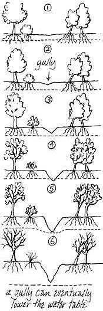
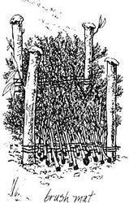
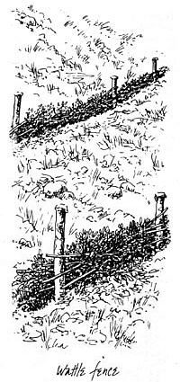
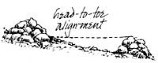
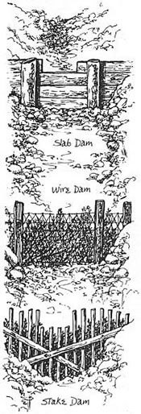

A visitor from outer space might have a good laugh at how we handle - or don't handle - erosion. Our homes have locks on the door, latches on the window, and insurance policies in the dresser drawer, and we support a huge police and prison system - largely to protect a few cameras, watches, and other gewgaws. Meanwhile, outside our windows, every rainstorm carries away thousands of tons of valuable topsoil upon which we depend for our very survival. Our scale of values is pathetically confused, when you stop to think about it. With modern assembly-line methods, we could replace a stolen stereo in a few hours. Yet it takes nature almost a thousand years to rebuild one inch of topsoil.
Some people, especially farmers, have a fatalistic attitude toward erosion. Land erodes, they feel, just as people grow old, automobiles sputter and stall, and apple trees eventually give out. But land is not like that. It does not have to erode. In fact, a healthy land adds humus and builds up its fertility every year. Individual plants and animals die, giving up their lives to help build a healthy, vital, growing soil for future generations of plants and animals. This nourishing of the soil is what makes death meaningful and even beautiful. Think about that for a moment, and don't accept erosion as a "fact of life."
Another conceptual trap you can fall into is the "Grand Canyon argument." Erosion built the Grand Canyon, so the argument goes, implying that erosion is a natural process that should not be interfered with. But erosion is "natural" only in desertlike areas where there is too little rainfall to maintain a thick growth of vegetation. When the rain does come, it is often in raging torrents that wash away the sparsely vegetated soil and create the dramatic canyons and badlands of the American West. Elsewhere, however, erosion is unnatural, the result of man's misuse of the land.
I have an almost missionary zeal whenever I think of erosion control. But there is one thing I should not gloss over. Fighting erosion is a hard, heavy battle; and, as with any other worthwhile battle, there's a good chance that you will lose. Water erosion is a strong, persistent enemy. It's a fascinating enemy too: crafty, treacherous, sneaky, unforgiving, unforgetting, mindless, and merciless. Supposedly you can make a pact with the devil, but not with erosion.
In this article there are instructions for building check dams, contour trenches, and wattles. Follow these instructions and you'll have good reason to expect success. Most of the time. But there is also a good chance that an exceptionally heavy rain, exceptionally unstable soil, or a minor fault in construction will allow the water to wash your structure right away. When that happens, what are you left with? If you and whoever works with you did not enjoy the experience of working together, you are left with nothing. Less than nothing! But if the experience of building and planting was warm, cooperative, compassionate, and friendly, the project was a success whether the check dams hold or not.
As an engineering venture, you should build your structures as if they were going to last forever. Perhaps they will. But as a spiritual venture you should treat the whole thing as if success or failure of the structures is totally irrelevant. Make sure the process is human and loving, have fun, and open your eyes to the here and now. Saving soil is important, but not at the expense of losing a group of kids or a group of friends.
In the following sections I tell you what deeds you must do to fight erosion. But before you put on your coat of armor and rush out of the house, let's stop for a minute to examine the nature of the beast. Here is a model of atypically eroding watershed.
To begin at the beginning, drops of rain fall down. Plip, plip, plip. They hit the ground at a speed of about 30 feet a second. If your land is healthy and the raindrops fall onto a thickly carpeted meadow, a wonderful thing happens. It is something you have to see to appreciate fully. The next time it begins to rain, try to forget everything your mother taught you about "catching your death of cold," lie down on your belly, nestle your chin into the grass, and get a frog's-eye view of how raindrops fall. You'll see how the raindrops hit the individual blades of grass, causing them to bend down. This bending absorbs the energy of the raindrop, and the raindrop slides gently off the blade of grass, which immediately springs up again, waiting to catch another raindrop. Perhaps it's just my own sense of humor, but the sight of hundreds of blades of grass bowing down and popping back up like piano keys strikes me as one of the merriest sights in the world; I've spent embarrassing amounts of time rolling around on wet meadows in the rain, laughing at the wonderful antics of the blades of grass.
After the energy of the raindrop is taken up by the grass, the raindrop slides gently to the ground. On a healthy meadow with lots of humus, the ground is spongy and absorbent and the raindrop quickly sinks out of sight.
A similar thing happens in a forest. As every kid knows, the best place to run when a sudden rain comes is under a tree - unless, of course, there is thunder and lightning. The leaves of the tree break the raindrops into a fine mist. What moisture does fall through the canopy is easily absorbed by the understory, the leaf litter, and the humus, and it too sinks gently into the ground.
But let's say that the ground has been logged, grazed, burned, cultivated, or otherwise disturbed. There are now bare patches of earth. When the raindrops hit a bare spot, they strike full force, like tiny hammers, and splatter the soil. This splattering breaks up clods of earth into fine particles. The raindrops hold the fine particles in suspension. As the water sinks into the soil, these fine particles get filtered out and soon clog up and seal the passageways through which the water would ordinarily flow. The clogging and sealing effect is very important: Clear water percolates through the soil ten times faster than muddy water. After a brief time the soil becomes crusty and impenetrable, and the water can no longer sink in. Instead, it forms puddles on the surface.
On flat land, the puddles loiter around, grow bigger, and form temporary ponds. The soil structure is damaged somewhat, but there is no real erosion.
On slopes, however, the water flows downhill over the surface of the ground, evenly, like a sheet. It carries dirt particles dislodged from the tops of hills and deposits them below, creating what is known as sheet erosion .
Probably the worst thing that can happen at this point is that the flow of water becomes channelized, either because of the topography of the land or because of an accidental occurrence like a furrow, a tire rut, or a cow path running downhill. The water gathers speed and the particles of dirt act like sandpaper. The water soon cuts a small trench, or rill, which it may eventually widen and deepen into a gully.
As you can see, a gully is really the result of erosion - not the cause. Yet once the gully gets established, it brings about many severe problems. With each rainstorm, it gets deeper and deeper until it may even cut below the level of the groundwater, draining it and lowering the water table.
We now have the beginning of a vicious cycle. As you probably know, much deep-rooted vegetation depends more on groundwater than on surface water from the rain. As the water table is lowered - both from lack of rainwater penetration and from the draining action of gullies - vegetation over the watershed becomes more meager and scruffier. In some places fields of thick grasses are replaced entirely by sagebrush and chaparral, with scraggly growth and much exposed soil. Less groundwater leads to scruffy vegetation, which leads to more bare soil, which leads to more splatter, more soil clogging, less water penetration, more runoff, and a further deepening of the gully. As the gully deepens, it drains the water table still more, producing a further loss of vegetation, more exposed soil, more splatter, and so on for another downward cycle.
Meanwhile, as the gully gets deeper, the earth along its banks begins to cave in. Soon the gully sends out fingers that spread over the meadow, eating steadily away at the soil.
Within a few years, thousands of tons of topsoil are washed away, along with thousands of tons of subsoil. Where does it all go? Eventually, the gully probably drains into a stream. On a healthy watershed, a good cover of vegetation absorbs water, holds it like a sponge, and releases it gradually into the stream. The stream runs steadily and cleanly. But on an eroding watershed, the water runs off the surface with a heavy load of suspended silt, swoops through the gullies, and flushes out into the stream after every rainstorm. Instead of a clear, even-flowing stream, there is now an intermittent dry creek given over to flash floods. The silt kills whatever life there is in the stream and acts like sandpaper to cut into the stream bed and banks, causing further damage.
Sound dismal? It is! Yet this is exactly what is happening to thousands of small watersheds around the country. You should be aware of this process, but if your land has a few gullies, please don't freak out. Gullies can be stopped, and even if the "vicious cycle" has begun, you can do a lot to reverse it. That's what this article is about: how to stop erosion without a lot of money, bulldozers, or a detachment from the Corps of Engineers.
So far I've given you a model of a typically eroding watershed, which should help you to conceptualize what's happening on your land. If all you're going to do is think about erosion, you can stop here. But if you're going to do something about it, you'll need a gutlevel feeling for how erosion is happening on your land. This feeling, more than anything you read, will tell you where to plant, where to mulch, where to build check dams, and where to stay out of the way. It'll prevent you from building a matchstick structure to stop a raging torrent, and it'll save you the trouble of building a Hoover Dam to control a trickle.
In short, you've got to get wet! You've got to go out in the rain, lie belly down on your meadows, squish soil and mud through your fingers, look at the color of your water, and poke at the sides of your gullies to see how solid they are. Water is amazing stuff, and to see what it does, you've got to get intimately acquainted with it.
A firsthand understanding of how your land is (or isn't) eroding will have its side benefits. It'll get you out in the rain, which is sort of magical in its own right. It will also give you an appreciation for the strength, determination, and beauty of the erosion process. If you are going to fight erosion, it's much better to fight a beautiful enemy that you admire rather than an ugly enemy you hardly know.
One more thing. The Soil Conservation Service is an excellent ally in fighting erosion. You can find it by looking in the phone book under U.S. Government, Department of Agriculture. I've called upon these people for various meadow, forest, stream, and gully problems. They have sent me (free!) grassland experts, stream experts, and soil engineers - persons who knew their subject well and who gave me not only advice but usable advice at that. My own good experiences with the Soil Conservation Service may have been accidental, but by all means give it a try.
Of structures and plants. Later on, I'll explain how to build structures that will stop erosion and hold soil together. Building these structures can be fun, like playing with an oversized erector set, but please don't get hung up on them. The Army Corps of Engineers seems to view erosion-control structures as monuments, and in many places its cement bulwarks are even more prominent and obtrusive than the original erosion. Don't make that mistake. The structures I recommend are merely temporary, even rinky-dink, devices to hold the soil together until a permanent vegetative cover can get established.
The only successful and lasting way to fight erosion is with plants. One of the nicest things about using plants is that plants want to fight erosion. In fact, they want to fight erosion even more than you do, and what's more, they know how to do it. Take a blade of grass. Grass depends for its survival upon topsoil, and over the last several million years it has developed ways of holding on to and increasing the earth's supply of topsoil. Grass intercepts raindrops; it forms a tough, tangled mat that prevents raindrops from flowing downhill; its fibrous roots embrace the soil and hold it together. Decaying roots create passageways through which water can penetrate, while transpiration allows the grass to pump water out of the soil before the soil gets waterlogged. At the end of its life, grass falls to the ground, decays, and becomes humus, which is the best of all possible elements in the topsoil. Plants depend upon a healthy soil, and they have learned how to serve and preserve that soil. Every time you drop a seed into the ground, you are introducing an ally with millions of years of genetic experience in fighting erosion and tremendous willingness to put that experience to use.
Temporary cover. The first thing you should think about when you are faced with an erosion problem is a temporary (or emergency) cover. You will eventually want to plant a permanent cover of native plants that will perpetuate themselves and restore the soil. But if you have a lot of bare land and an immediate danger of erosion, you have to act fast. You need some sort of temporary vegetation just to hold things together until the permanent vegetation can get established.
Certain plants have a special capacity for stopping erosion. I wish I could tell you exactly what you should plant on your land - I know it would make your life easier - but I can't. There are too many variables. I know that in the hills above Oakland I can get good results with a mixture of rye, barley, trefoil, mustard, and a few other flowers. But I doubt if this information will help you if you're in Indiana, Georgia, Vermont, or Alaska.
All I can do is give you general advice about what you should look for in an emergency cover plant. For the specifics you'll need local guidance from your Soil Conservation Service, your county agricultural extension agent, your local hermit and organic gardener, or your local seed dealer (who often has a special "erosion-control mix"). Or you can look into some of the books I recommend at the end of this article which give a species-by-species rundown of many valuable erosion-control plants and tell where they can be used.
The ideal erosion stopper is a plant that [1] germinates quickly and easily; [2] grows fast before the first heavy rains; [3] has a dense, fibrous root system; [4] is frost resistant; [5] is temporary - make sure the recommended "wonder plant" won't take over everything in sight; and [6] is a mixture. Don't depend on one plant, no matter how good its reputation. And make certain that at least one element of the mixture is a legume (member of the pea family). Legumes do for the soil what yogurt does for the intestines - they foster lots of beneficial microorganisms that do much of the real heroics in creating healthy soil.
How to plant a temporary cover. The best way to establish a temporary cover is first to dress the ground with a light sprinkling of very well rotted manure or compost. You might want to work it into the soil a little bit with a hoe and then rake it some - but not too deeply, please. If you have erosion, you want to disturb the soil as little as possible. Once you've prepared the soil, simply broadcast the seeds a day or two before you expect rain.
Fertilizers and exotics. What if you are dealing with a huge area, or if you don't have enough manure or compost for even a small area? Here's what you do. Scratch the surface of the ground slightly with a rake. Then spread the seed before you expect a rain. Wait until the seed has germinated and growth is under way, then carefully add an appropriate chemical fertilizer. (The Soil Conservation Service or a local seed dealer will tell you how much seed to scatter and what kind of fertilizer is "appropriate.")
Aside from chemical fertilizer, there is another bitter pill you may have to swallow. Some of the most effective plants for erosion control are exotic grasses and clovers. Call me a native-plant chauvinist, but I normally abhor foreign exotics. I have very high standards about not using them. For that matter, I have very high standards about not forcing growth with chemical fertilizers. Yet when the soil is bare and the rains are due, I am faced with a clear choice: I can either hang on to my standards, or I can hang on to my topsoil. Standards can be replaced, rationalized, or even forgotten within a week. Topsoil takes thousands of years to form. Whenever I've had to make a choice, I've opted in favor of topsoil.
If you do decide to use an exotic, there are special guidelines you should follow. Make sure the exotic has been around for a long time and is well tested in your area. Make especially certain that it won't escape and spread all over the place.
After seeding. If your land is relatively flat, you can seed and forget. But what if you're working on a steep slope where the soil is so unstable that you're afraid it will wash away, or where the land is so hard that you think the seeds might simply float down the hill? In such cases you'll have to devise some way of holding the seeds and earth in place - at least until the seeds germinate, the roots work their way into the soil, and the green stuff rises up like flags of victory to tell you everything is going well.
Willow stakes. In the following sections I describe several structures that will hold the soil together for a while. You can use any materials to build these structures, but if you use willow cuttings, you will reap an extraordinary advantage. Not only will they serve a mundane mechanical function as posts or stakes, but they will very likely sprout, send down roots, help bind the soil, and carry on an exuberant and useful existence of their own. Willows are especially valuable wherever you're dealing with moist land and bad drainage.
In addition to willows, there are other cuttings you can use for living stakes or posts. In our part of California, for example, elderberries and "mule fat" sprout easily from cuttings. Under hard conditions they may last for only one or two seasons - but while they last they'll do a lot of good.
Black locusts. The black locust is not an insect; it's a tree with a supergood reputation for erosion control. It establishes itself on poor, dry sites, has a spectacular rate of growth and a good root structure, and adds a lot of nitrogen to depleted soil. It is not unusual for a three-year-old locust to be 15 feet tall with a root system spreading 25 feet.
You can plant locusts as seedlings or from root cuttings. For erosion control, plant them close together - say, five feet by five feet, or even three feet by three feet in really bad places.
Permanent vegetation. Temporary vegetation is meant to give out, and even willows and locusts are not usually climax species. You should plan for what you hope the permanent vegetation will be. Talk it over with your land. Find out what was there before the land was misused. Decide whether the land can support its climax vegetation, or whether you should begin further down the line of succession. I can't advise you what to plant - it varies from one area to another, and in fact from one acre to the next - but by studying uneroded, undisturbed land in your neighborhood, you should be able to figure it out.
The best time to plant a permanent vegetation is just as soon as the temporary vegetation has stabilized things - usually toward the end of the first rainy season.
It may sound silly and quixotic to you, but if you are going to control erosion, you must begin by fighting raindrops. Raindrops hammer insistently at your land, and to prevent damage there are two things you must do. First, you've got to make sure there is something waiting to intercept the raindrops before they hit bare soil: vegetation, if possible, or some sort of mulch. Secondly, once the raindrops fall, you've got to stop them; corral them, and let them sink into the ground. If, perhaps with trenches, brush mats, or wattles, you can get the raindrops to sink into the ground wherever they fall, there will be no runoff, and thus no erosion.
How to recognize sheet erosion. Sheet erosion, according to the people who measure such things, causes 80% of all topsoil losses. Gullies cause only about 20%. Yet a gully stands out like a wound, screaming for attention, while sheet erosion happens so gradually, almost invisibly, that it's hard to detect. You think everything is all right until one day you wake up and realize that your topsoil is gone. Sheet erosion is very insidious.
Is your land suffering from sheet erosion? Looking for sheet erosion is a little bit like searching for a snake. If you merely walk around, sniffing flowers and lackadaisically enjoying whatever strikes your eye, you are unlikely to see a snake. But if you make a special effort to find one, turning over logs and stones, looking hard between the blades of grass and around bushes, you will probably find several snakes in a few hours.
The same is true of sheet erosion. You have to go out into your fields with nothing else on your mind except looking for sheet erosion. Don't get waylaid by flowers, butterflies, or ripe strawberries. Keep your mind on your task. Climb to the top of a hill, forget about the view, and look down at the soil. Here is what you should be looking for.
BALD SPOTS on the hilltops and slopes, often with a buildup of fertile soil down below.
EXPOSED ROOTS Roots of trees, shrubs, and other plants do not grow out of the ground. If the roots are exposed, it is because the soil has been washed away.
STAINS ON OLD FENCE POSTS These sometimes show that the soil was once deeper than it now is.
EXPOSED ROCK If you feel that your meadows have been getting rockier and rockier each year, unless your land is a gathering spot for meteorites, this is a sign that the soil is being washed away.
Mulch. Once you discover sheet erosion, don't waste too much time either admiring it or bemoaning it. Get the right mixture of seeds, put them in a wide, shallow basket, and go skipping across your meadows like Ceres strewing the seed. Be joyful - and the seed, the land, and perhaps the universe will respond to your joy.
In most places you can seed and forget. But if the soil is loose and unstable, or if it is so hard that you're afraid the seed will wash off, or if the slope is exceptionally steep, you should apply a mulch after you've seeded. A light covering of mulch does wonders. It cushions the impact of the raindrops, like those blades of grass, and allows the water to settle in gradually. It creates a network of little dams on the ground that impound the water and prevent it from getting a running start down the hill. It absorbs water. And as it decays, it adds organic matter that eroding land usually needs so desperately.
But remember: Underneath the mulch are seeds, and you want to encourage, not smother, their growth. So keep the mulch covering thin - no more than an inch or two - and avoid any mulch that tends to mat down.
Straw is far and away the best mulch you can get for erosion control. But don't be too fussy; other mulches also work very well.
Brush mats. Brush mats are for really nasty places - places where you want to use a mulch but where the slope is so steep that you're afraid a loose mulch will wash down the hill. Believe me, an eroding hillside with a huge pile of soggy mulch at its base is a nightmarish sight. The way to avoid it is to use brush as your mulch and tie the brush together into mats.
To make a brush mat, first lay two wires parallel to each other on the ground, about two feet apart. Lay the brush over the wire. If you use fir boughs or pine boughs, pile them very thin; otherwise, they'll smother the seed. If you use sparser chaparral brush, you can make the mats as much as six inches thick.
After you arrange the brush over the wires, bring the wires back over the top of the brush. Use baling wire to connect the upper and lower strands of wire. Pull them tightly together and tie them off, making a connection every six inches or so. The loose ends can be twisted tight with pliers.
You now have a brush mat that will hold together very effectively, even on quite steep slopes. If you want to be extra safe, you can stake your brush mats down to the ground - preferably with sproutable, rootable stakes.
Contour trenches. Here is still another technique you can use in addition to mulching. If by some chance you don't have any mulch, you can sometimes use this technique instead of mulching.
Contour trenches are simply ditches that you dig along a hillside in such a way that they follow a contour and run perpendicular to the flow of water. They catch water and allow it to sink into the ground before it can get a running start down the hill. Contour trenches are particularly valuable on hardened soil - like old logging roads - where water penetration is painfully slow.
To make contour trenches, first gather all your friends and issue them picks, mattocks, and shovels. When the moaning and groaning stop, begin digging several short trenches five or six inches deep and no more than about two or three feet apart. Keep this project short! Digging ditches on a hard-packed, heavily eroded slope is nobody's idea of great fun.
Brush wattles. Simple seeding, mulching, brush mats, and contour trenches will take care of 98% of your sheet erosion problems. For those rare times when you have an exquisitely nasty and persistent problem with sheet erosion, you can resort to brush wattles.
Begin by making a series of contour trenches at least eight inches deep, preferably deeper. As you remove the dirt, somehow, somewhere, get it out of the area. Next, lay some brush in the trenches. Stagger the brush along the trench so that it all interlocks, like strands within a rope. As you build up the brush, stomp it hard so that it packs into the trenches. If it keeps springing up, you can try cursing it or packing it down with some dirt. The last several pieces of brush that you lay in the trench should stick up above the level of the land. To help keep the brush in place, knock in stakes (preferably stakes capable of growing) just behind the trench on the downhill side. Space the stakes one foot, or at most two feet, apart. If you have lots of long, limber branches, you should weave them between the stakes to form a wattle fence.
What you're left with is admittedly a weird structure, and one that is hard to build - especially on a steep, unstable slope where you are most likely to need it. It has, in fact, only one redeeming feature: It works! The water running downhill sinks into the trenches. Silt suspended in the water also gets caught in the trenches and builds up within the protruding branches of the brush and behind the wattle fence. A wattled slope soon forms little terraces of relatively stable silty soil - excellent places for plants to get a start.
Patrick Henry (of "liberty or death" fame) once said, "Since the achievement of our independence, he is the greatest patriot who stops the most gullies." I used to think this statement a bit outlandish, but the more I've gotten to know about land, gullies, and patriotism; the more I've come to agree.
Rills. The easiest way of stopping a gully is to catch it early. Whenever you see small rills (or channels), get right to work. Use a mattock or a hoe to break them up. Work in some compost or rotted manure, if you can, and rake the area smooth. Then treat the area as you would for sheet erosion - seed it, mulch it, or possibly use brush mats or contour trenches.
Gully monsters. A neglected rill may grow up to be a monster gully. In the next two pages I'll tell you how to go about fighting and conquering gullies. It's a long, complicated fight, but very much worth the trouble. We no longer have fire-eating dragons, but we do have land-eating gullies to fight. Just to make sure you can find your way through the following instructions, here is an outline of the battle plans.
[1] Stabilize the gully bottom. The bottom is more important than the sides. If the gully continues to dig deeper, no matter what else you do, the sides will cave and slump. You've got to prevent the gully from getting any deeper, and you should even attempt to build up the bottom.
[2] Grade the walls of the gully to their angle of repose - the angle at which they will no longer slump or slide.
[3] Stop or reduce the flow of water entering the gully.
[4] Plant an immediate cover of grasses and legumes that will hold everything together for a season or two.
[5] Plant a permanent cover of native shrubs, trees, vines, and grasses that will eventually stabilize the area, perpetuate themselves, build up soil fertility, encourage wildlife, and completely restore the land.
Check dams. The way to stabilize the gully bottom and build it up again is with check dams. Please don't be intimidated by the thought of building a dam. You're not going to be competing with Grand Coulee or Aswan. In fact, your check dams won't even hold any water. They are merely obstructions that will slow the water down. And the best of all possible obstructions (as we all know from our various misadventures in life) is a big mess. Basically that is what a check dam is: a big mess of brush or perhaps straw packed into the bottom of the gully, with a simple structure to hold it all in place.
Why a check dam works. I think we all have an intuitive sense of why a check dam works: A slow-moving stream carries far less silt and does far less damage than a raging torrent. But to understand how dramatically true this is, you might want to consider a few hard-core engineering facts. If you reduce the speed of the flow of water by one-half, here (according to certain laws of hydraulics) is what happens:
The erosive or cutting capacity of the water is reduced about four times. The quantity of silt that can be carried is reduced about thirty-two times. The size of particle that can be transported by pushing or rolling is reduced about sixty-four times.
As you can see, by slowing down the flow of water, you reduce the amount of damage it can do, and you very spectacularly reduce the amount of silt it can carry. If there is lots of silt suspended in the water, once you slow the water down, most of the silt will be dropped - thus building up the bottom of the gully again.
The principles of check dam architecture. There are many possible designs and materials for building check dams, but whichever one you choose must adhere to certain architectural principles of check dam construction.
HEAD-TO-TOE ALIGNMENT The most effective way of building check dams is to build them in a series where the base of the upper dam is on a level with the top of the lower dam. This will eventually stabilize the whole gully bottom and will create a series of steps or terraces.
SMALLNESS "The bigger they are, the harder they fall" applies particularly to check dams. For most gullies, the check dams should be no more than about two feet high. Anything much higher than two feet will necessitate anchors, deadmen, and other retaining-wall features. Several small dams are far more effective and easier to build than one or two big dams.
DIGGING IT IN The dam must be dug into the walls of the gully, not just laid genteelly up against them. Unless the dams are dug far enough in, water will sweep around them.
NOTCHING A notch is a place where the water can flow over the dam. This is essential. Without one, the silt builds up behind the dam, the water flows on top of the silt, and instead of being led through the notch, it may start eating away at one of the slopes. Eventually, it may make a new channel around the dam. I've seen many erosion-control dams standing proudly and nobly on dry land while gullies flowed merrily around them.
APRON Once the silt builds up behind the dam, the water flows through the notch like a waterfall. You'll need an apron to catch it befores it digs out a pool and undermines the dam. The easiest apron is a bed of stones where the water can simply knock itself out and flow tamely to the next check dam.
Building a check dam. There are several possibilities for building very good check dams: a rock dam, a wire dam, a stake dam, a pole dam, and a plank or slab dam. Which one you choose to build will probably depend more upon the materials you can scrounge up than upon anything else. I built mostly pole check dams because we had plenty of poles. Whichever one you decide on, remember to follow the general principles already laid out, and you will make out very well.
Grading the slopes. After you build the check dams, your next step is to break down the steep gully walls to their angle of repose . To my ears, "angle of repose" is one of the most beautiful phrases in the language. Unfortunately, it's far easier to say it than to do it. I know of no easy way of breaking down steep, clifflike slopes. Professionals sometimes use dynamite and bulldozers, so I've been told, but all the bulldozer operators I've ever met are scared to death of working along the rim of a sizable gully. When it comes to grading gully slopes, the machine age has deserted you, my friend, and what you are left with, wonder of wonders, is your hands! So get together a collection of picks, mattocks, shovels, and digging bars, round up everyone you know who owes you a favor, and get on with it. Knock off the sharp edges, and wherever you can, gentle out the steep slopes.
As you are working, you'll be knocking tons of earth down into the gully bottom. The first rains will dissolve this earth, spread it out, and deposit it behind the check dams to raise the bottom. You can help this process along, and also prepare the bottom for planting, by breaking up whatever heavy clods fall into the bottom. If you have any water, you might also wet the dirt down to compact it and further ready it for planting.
Once the slopes have been graded to their angle of repose, you should treat them for sheet erosion, with seed, mulch, or the other devices recommended in the previous section.
Limiting the water flow. You now have to make certain that as little water as possible enters the gully. Where is the water coming from that originally carved it out? You must find that water, even if it means going out in the middle of a rainstorm.
You can usually restrict the flow by treating the area above the gully head for sheet erosion. Contour trenches usually work quite well, and as a last resort brush wattles are nearly infallible. Whatever treatment you use, make sure you extend it far up the slope.
Occasionally an expert will appear in your life and suggest that you divert the flow of water away from the gully. He will urge you to build a "diversion ditch," perhaps with an "entrapment compound." He will probably pull out a pencil and paper and make a few fancy diagrams. When you meet such an expert, the first thing you should do is grimace, pound your chest, jump up and down, and point excitedly to the sky. If this doesn't scare him off, grab your hat and run. As you can guess, my own experience with "diversion" has been disastrous. Diversion does not solve any problem; it just moves the problem somewhere else.
Planting. Once you've stabilized the bottom of the gully, graded the slopes, and reduced the flow of water, you have completed the mechanical aspects of controlling the gully.
Now you should plant. Use the previously mentioned routine of temporary planting followed by permanent planting. Don't plant anything in the bottom until the silt has collected into terraces. Then you can plant moisture-loving trees right in the silt, where they'll usually thrive.
Maintenance. Remember the little Dutch boy who put his finger in the dike, held back the ocean, and became a culture hero to all five-year-olds? I don't suggest you spend all next spring with your finger in a check dam, but the Dutch-Boy Principle still holds: Small leaks can be easily plugged. Sometimes all that is necessary is for you to shove a few pine boughs in at the right place. If you do, silt will continue to collect. If you don't, the leak will often get bigger and bigger, bringing the whole dam down. You should also check to see that the mulch is still in place, the grass has germinated well, and no heavy flow of water is entering the gully. Visit your check dams as often as you can during the first one or two seasons to see how well they are holding up and to solve minor problems before they grow.
Culverts. Culverts are pipes that bring water under a road or trail. They are responsible for thousands of gullies in every state. Road engineers have a strange idea that if they install these culverts at a steep pitch, the water will flow through them very fast and keep the culverts clean of debris. Road engineers really get turned on by "self-cleaning" or "self-maintaining" culverts. But as I've already mentioned, the fast flow of water increases its erosive powers many times over. And often at the dump end of the culvert you will find a huge gully.
If there is already a gully, you have no choice but to go ahead with the gully trip. But if you can catch the problem early, the best thing you can do is dump a lot of rocks, broken asphalt, or cement rubble under where the culvert lets out. This will break the force of the water, acting much like an apron beneath a check dam. If you do this wherever you have a culvert, you will save a lot of aggravation and a lot of soil as well.
Afterwards. I don't want to minimize the fact that controlling a gully is hard work. But it is necessary work, and in the long run extremely satisfying.
Once you have brought a gully under control, watch it closely and uncritically. You may be in for a surprise. Some of the most beautiful places I know are old, stabilized gullies. When you are fighting a gully, you are primarily fighting erosion damage. But you are also creating a shady, potentially lovely, miniature canyon which will collect. moisture, support many plants, and become a wonderful refuge for wildlife. Turning a barren gully into a lush pocket of life is the nearest a human being can come to an oyster, which turns its injuries into pearls.
In other areas of conservation there is pitifully little information. Not so with erosion control. The 1930s were dust bowl years, gully years, and Civilian Conservation Corps years. The CCC, the Forest Service, and the Soil Conservation Service all published loads of erosion-control pamphlets and books. Every field worker who developed a new style of check dam - and there were hundreds - published a description of it. Sometimes the check dams collapsed within a few years, but the publications live on to clog our minds. The problem I've had with erosion-control literature is wading through it all for what seems sound, relevant, trustworthy, and useful. Here are some of the books I have found especially handy for small-scale erosion-control projects.
Handbook of Erosion Control in Mountain Meadows , by Charles J. Kraebel and Arthur F. Pillsbury. California Forest and Range Experimental Station: U.S. Forest Service, 1934.
For most people this is probably an impossible book to get hold of, but by all means try your best. It's the most thoroughly practical book I know, with lots of simple suggestions for controlling gullies. There are excellent diagrams and a strong emphasis on using native materials.
A Study of Early Gully-Control Structures in the Colorado Front Range , by Burchard H. Heede Paper No. 55. Rocky Mountain Forest and Range Experiment Station: U.S. Forest Service, 1960.
This publication is a review of several Civilian Conservation Corps structures, examined 25 years after they were built. It shows which ones stood up, which ones failed, how they failed, and why they failed. It's very instructive. Here is your chance to learn from someone else's mistakes.
Grass in Soil Erosion Control , by Layman Carrier. SCS-TP-4. Washington, D.C.: Conservation Service, 1936.
This pamphlet gives a short list of various grasses and discusses their erosion-fighting values.
Results of and Recommendations for Seeding Grasses and Legumes on TVA-CCC Erosion Control Projects , by J.H. Nicholson and John E. Snyder. Norris, Tennessee: Tennessee Valley Authority, 1938.
This list of grasses and legumes rates them according to where they will grow, what their moisture and soil needs are, how well they bind the soil, and how well they build up soil fertility.
Trees and Shrubs for Erosion Control in Southern California Mountains , by Jerome S. Horton. California Forest and Range Experiment Station: U.S. Forest Service, 1949.
Giving a plant-by-plant list of several species of trees and bushes, this book tells where to plant them, when to plant them, and even how to plant them. It also has detailed diagrams of various erosion-control structures. It's too bad this valuable book is so limited in geographical area. You might check to see if your own Forest and Range Experiment Station has a similar publication.
The Stream Conservation Handbook , coed by Nathanial P. Reed. New York: Crown Publishers, 1974.
This book claims that "the primary objective of stream improvement is the restoration and enhancement of trout habitat." It was written for fishermen, many of whom are beginning to band together into groups like Trout Unlimited to maintain their streams. The big-stream scale of this book will probably make it not very handy for small landholders. But if you do happen to have a fishing creek, it will tell you what you have to know to keep it fishable.
One of the first things the early settlers did when they claimed a piece of land was to put up a fence. To make the fence, they'd fell some relatively valueless tree, like a willow, perhaps, and cut it into posts. After driving the posts roughly into the ground with a maul, they'd set the log rails on top of the posts, and there would be a crisp, clean-looking fence for a couple of months at least.
Now if you've ever dealt much with fences, you know that the major problem is usually decay. But if the fence is made of willow posts, there is another very different sort of problem. After a few months the fence posts begin to sprout. Thick, turgid buds appear and spread up and down the posts. The buds burst into leaf, and soon the fence begins to grow - no longer a fence but a living, vigorous row of willow trees.
Many river trees, like willows, cottonwoods, and poplars, have this marvelous, persistent ability to sprout. It's an important part of their survival, I suspect. Many of these trees have long, whiplike or brittle branches that break off in winter and float downstream. The heavier end eventually settles somewhere in the wet mud and sends out roots, and a new tree begins growing.
This remarkable rooting ability, which proved so disconcerting to early fence builders, can be a great boon to us. A willow branch pounded into the ground will grow anywhere - yes, anywhere - as long as there is enough year-round moisture. Willows will root in the most barren and unstable of soils, which makes them the most valuable tree I know of for erosion control.
Cottonwoods and poplars can also be rooted if you follow the instructions I'm going to give. But in addition to water they need a richer, "river bottom" type of soil if they are to prosper.
When to plant. The best time to plant willow cuttings is in the fall or very early spring - when we call the tree dormant. Actually, only the leaves are dormant. The roots continue to grow all winter from stored energy, and when the buds burst in the spring, the new leaves will have a healthy system of roots to provide them with moisture and minerals.
There is a way of planting willows when they are in leaf. The danger, of course, is that the leaves will transpire moisture faster than the growing roots can provide it and the tree will dry out. You can prevent this by clipping off all the leaves along the stake except one or two, and by continuing to trim off leaves all summer long. It's a lot of trouble, and it's a bit risky, but if you can plant only during the leafy season, you might give this method a try.
Collecting and preparing willow branches. Follow normal instructions for pruning. Cut weak or crossed branches first, and be sure to cut flush with the trunk . . . don't leave a stub. Any willow will give equally good cuttings, so don't get hung up on species.
After you collect the branches, cut them into convenient lengths for planting. Don't try to chop them up while you're in the middle of a tangle of willows, but drag the branches out to a clear area where you can set up a chopping block and have enough room to work.
The cuttings should be at least 18 inches long and at least a half-inch thick. Anything this size or bigger - even up to 10 or 12 feet long - will grow, but the bigger the cutting, the deeper you will have to plant it, so beware.
One thing that determines the length of the cuttings is the water table. If you're planting on land that is wet year-round, you can use shorter lengths. In our part of California, where it gets dry in the summer, l usually have to cut the stakes five feet long or more so that 1 can pound them deep enough to reach moist soil.
To cut a branch, lay it over a chopping block and use a sharp ax. At the thicker end (the end toward the trunk), make a point. At the narrow end (toward the tip of the branch), make a flat, straight cut.
It is very important to note which is the butt end. If you plant the willow upside down, the sap will flow in the wrong direction and the cutting will die.
Preparing a hole. If the ground is soft and moist, you can just pound the stake into the ground without any preparation.
If the ground is rocky, however, you might strip the bark too badly by pounding, so you must first prepare a hole - much the same idea as drilling a pilot hole for a screw. For smaller stakes, you can pound a digging bar or even a crowbar into the ground, wiggle it around a bit, pull it out, and insert the cutting. For really big cuttings, you may have to start the hole with a shovel or a posthole digger (if you've got one), then use the digging bar after you're a foot or so down.
The ground at the bottom of the hole should be moist, wet, or even flooded. If you are planting in winter or spring, remember that the water table is probably much higher than it will be later in the year, so dig deeper than you think is necessary.
Pounding the cutting in. This step is a mind-boggier. l would definitely recommend it as therapy to those "nature lovers" who tippy-toe across lawns, who cannot bear to see a tree pruned, and who otherwise insist that plants are very fragile, delicate pieces of creation. You take your carefully shaped cutting, insert its pointed end into your carefully made hole, and just pound the hell out of it. A heavy wooden mallet is the best tool. Or have someone hold a piece of wood on the flat head of the stake while you pound away with a sledgehammer. The idea is to knock the stake deeply into the ground without splitting the top too much. Split stakes grow, but they tend to dry fast, rot, or (if they live very long) develop badly.
The cutting should have at least half its length under ground, and even two-thirds or more of its length can be buried. If you don't plant it deep enough, there will be too much leaf and too little root.
Browsing. Cattle are notorious for browsing young willows. They'll desert a pile of hay, a bed of straw, the shade of an oak tree, or a field of alfalfa and come running whenever they see a young willow. If there are cattle present, you'll have to fence off the planting.
Wildlife browsing should not be too severe, unless you happen to have an overabundance of hungry deer at the end of a long, hard winter. If this is the case, you'd be best off planting bigger, taller, thicker cuttings, which are less tasty and which can withstand browsing somewhat better.
Have faith. The first time I planted willows, I felt unutterably depressed. After a full, hard day's work, I stood there with a group of kids looking at what we had done. It was a weird, desolate scene. Everywhere around us we saw dead-looking sticks pounded into the ground. It reminded me of an empty drive-in theater, or a municipal parking lot with hundreds of parking meters all over the place. We were all very tired, cold, and discouraged. The kids kept asking me if I thought these stakes would grow, and I said, "Of course" - but only because that was what I was expected to say.
Later that spring the kids returned to the area to camp. What they saw, as they told me later, was so exciting that they couldn't fall asleep that night. The "parking meters" were covered with thick, juicy buds just beginning to burst into leaf.
Since then I've found willow cutting to be one of the easiest, surest, and most rewarding of all projects.
EDITOR'S NOTE: This article is an excerpt from Malcolm Margolin's book, The Earth Manual: How to Work with Nature to Preserve, Restore, and Enjoy Wild Land Without Taming It (copyright © 1975, 1985 by Malcolm Margolin). The book is available for $8.95 postpaid (California residents add state sales tax) from Heyday Books, P.O. Box 9145, Berkeley, CA 94709; or see page 104.
|
 |
 |
 |
|
 |
 |
|